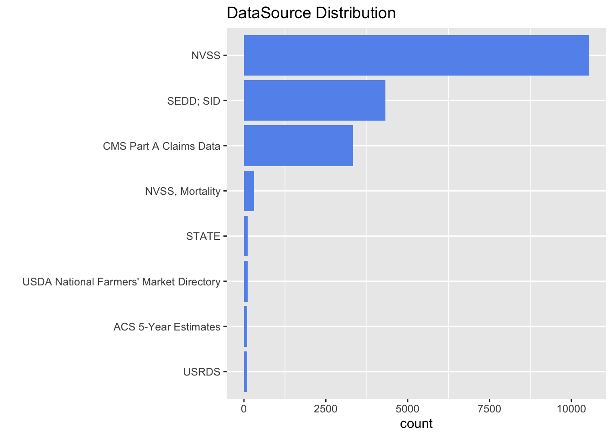

Chapter 4 Data
4.1 Sources
- Load the dataset
https://catalog.data.gov/dataset/u-s-chronic-disease-indicators-cdi
```
## [1] 1082328 34
```
```
## 'data.frame': 1082328 obs. of 34 variables:
## $ YearStart : int 2010 2017 2018 2011 2012 2015 2018 2010 2014 2016 ...
## $ YearEnd : int 2010 2017 2018 2011 2012 2015 2018 2010 2014 2016 ...
## $ LocationAbbr : chr "AK" "AK" "AK" "AK" ...
## $ LocationDesc : chr "Alaska" "Alaska" "Alaska" "Alaska" ...
## $ DataSource : chr "NVSS" "NVSS" "NVSS" "NVSS" ...
## $ Topic : chr "Alcohol" "Alcohol" "Alcohol" "Chronic Kidney Disease" ...
## $ Question : chr "Chronic liver disease mortality" "Chronic liver disease mortality" "Chronic liver disease mortality" "Mortality with end-stage renal disease" ...
## $ Response : logi NA NA NA NA NA NA ...
## $ DataValueUnit : chr "" "" "" "" ...
## $ DataValueType : chr "Number" "Number" "Number" "Number" ...
## $ DataValue : chr "70" "121" "121" "221" ...
## $ DataValueAlt : num 70 121 121 221 234 ...
## $ DataValueFootnoteSymbol : chr "" "" "" "" ...
## $ DatavalueFootnote : chr "" "" "" "" ...
## $ LowConfidenceLimit : num NA NA NA NA NA ...
## $ HighConfidenceLimit : num NA NA NA NA NA ...
## $ StratificationCategory1 : chr "Overall" "Overall" "Overall" "Race/Ethnicity" ...
## $ Stratification1 : chr "Overall" "Overall" "Overall" "White, non-Hispanic" ...
## $ StratificationCategory2 : logi NA NA NA NA NA NA ...
## $ Stratification2 : logi NA NA NA NA NA NA ...
## $ StratificationCategory3 : logi NA NA NA NA NA NA ...
## $ Stratification3 : logi NA NA NA NA NA NA ...
## $ GeoLocation : chr "POINT (-147.72205903599973 64.84507995700051)" "POINT (-147.72205903599973 64.84507995700051)" "POINT (-147.72205903599973 64.84507995700051)" "POINT (-147.72205903599973 64.84507995700051)" ...
## $ ResponseID : logi NA NA NA NA NA NA ...
## $ LocationID : int 2 2 2 2 2 2 2 2 2 2 ...
## $ TopicID : chr "ALC" "ALC" "ALC" "CKD" ...
## $ QuestionID : chr "ALC6_0" "ALC6_0" "ALC6_0" "CKD1_0" ...
## $ DataValueTypeID : chr "NMBR" "NMBR" "NMBR" "NMBR" ...
## $ StratificationCategoryID1: chr "OVERALL" "OVERALL" "OVERALL" "RACE" ...
## $ StratificationID1 : chr "OVR" "OVR" "OVR" "WHT" ...
## $ StratificationCategoryID2: logi NA NA NA NA NA NA ...
## $ StratificationID2 : logi NA NA NA NA NA NA ...
## $ StratificationCategoryID3: logi NA NA NA NA NA NA ...
## $ StratificationID3 : logi NA NA NA NA NA NA ...
```
Removing makes more sense than imputing4.2 Cleaning / transformation
Trim the data to only consider entries from 2018 - 2020 (COVID PERIOD)
Remove the unnecessary columns from data
## 'data.frame': 242935 obs. of 18 variables: ## $ YearStart : int 2018 2018 2018 2018 2018 2018 2018 2018 2018 2018 ... ## $ YearEnd : int 2018 2018 2018 2018 2018 2018 2018 2018 2018 2018 ... ## $ LocationAbbr : chr "AK" "AK" "AL" "AR" ... ## $ LocationDesc : chr "Alaska" "Alaska" "Alabama" "Arkansas" ... ## $ DataSource : chr "NVSS" "NVSS" "NVSS" "NVSS" ... ## $ Topic : chr "Alcohol" "Cardiovascular Disease" "Cardiovascular Disease" "Cardiovascular Disease" ... ## $ Question : chr "Chronic liver disease mortality" "Mortality from total cardiovascular diseases" "Mortality from coronary heart disease" "Mortality from coronary heart disease" ... ## $ DataValueType : chr "Number" "Crude Rate" "Number" "Number" ... ## $ DataValue : chr "121" "153.2" "3056" "2022" ... ## $ StratificationCategory1 : chr "Overall" "Overall" "Gender" "Gender" ... ## $ Stratification1 : chr "Overall" "Overall" "Male" "Female" ... ## $ GeoLocation : chr "POINT (-147.72205903599973 64.84507995700051)" "POINT (-147.72205903599973 64.84507995700051)" "POINT (-86.63186076199969 32.84057112200048)" "POINT (-92.27449074299966 34.74865012400045)" ... ## $ LocationID : int 2 2 1 5 4 4 6 8 9 9 ... ## $ TopicID : chr "ALC" "CVD" "CVD" "CVD" ... ## $ QuestionID : chr "ALC6_0" "CVD1_1" "CVD1_3" "CVD1_3" ... ## $ DataValueTypeID : chr "NMBR" "CRDRATE" "NMBR" "NMBR" ... ## $ StratificationCategoryID1: chr "OVERALL" "OVERALL" "GENDER" "GENDER" ... ## $ StratificationID1 : chr "OVR" "OVR" "GENM" "GENF" ...Since, we have many categories in Data Value, we are focusing on “Number”
Preprocess for ease of access
## [1] 18928 18## 'data.frame': 18928 obs. of 18 variables: ## $ YearStart : int 2018 2018 2018 2018 2018 2018 2018 2018 2018 2018 ... ## $ YearEnd : int 2018 2018 2018 2018 2018 2018 2018 2018 2018 2018 ... ## $ LocationAbbr : chr "AK" "AL" "AR" "AZ" ... ## $ LocationDesc : chr "Alaska" "Alabama" "Arkansas" "Arizona" ... ## $ DataSource : chr "NVSS" "NVSS" "NVSS" "NVSS" ... ## $ Topic : chr "Alcohol" "Cardiovascular Disease" "Cardiovascular Disease" "Cardiovascular Disease" ... ## $ Question : chr "Chronic liver disease mortality" "Mortality from coronary heart disease" "Mortality from coronary heart disease" "Mortality from total cardiovascular diseases" ... ## $ DataValueType : chr "Number" "Number" "Number" "Number" ... ## $ DataValue : num 121 3056 2022 260 1576 ... ## $ StratificationCategory1 : chr "Overall" "Gender" "Gender" "Race/Ethnicity" ... ## $ Stratification1 : chr "Overall" "Male" "Female" "Asian or Pacific Islander" ... ## $ GeoLocation : chr "POINT (-147.72205903599973 64.84507995700051)" "POINT (-86.63186076199969 32.84057112200048)" "POINT (-92.27449074299966 34.74865012400045)" "POINT (-111.76381127699972 34.865970280000454)" ... ## $ LocationID : int 2 1 5 4 4 6 9 9 11 11 ... ## $ TopicID : chr "ALC" "CVD" "CVD" "CVD" ... ## $ QuestionID : chr "ALC6_0" "CVD1_3" "CVD1_3" "CVD1_1" ... ## $ DataValueTypeID : chr "NMBR" "NMBR" "NMBR" "NMBR" ... ## $ StratificationCategoryID1: chr "OVERALL" "GENDER" "GENDER" "RACE" ... ## $ StratificationID1 : chr "OVR" "GENM" "GENF" "API" ...Data Source Distribution
## [1] 8There are 8 data sources contributing to the trimmed data, we will be working with the most optimal contributor.

Since “NVSS” has most contributions, we will be using the data only from that source.
## [1] 10540 18